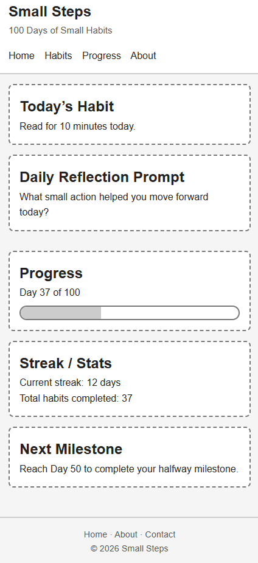
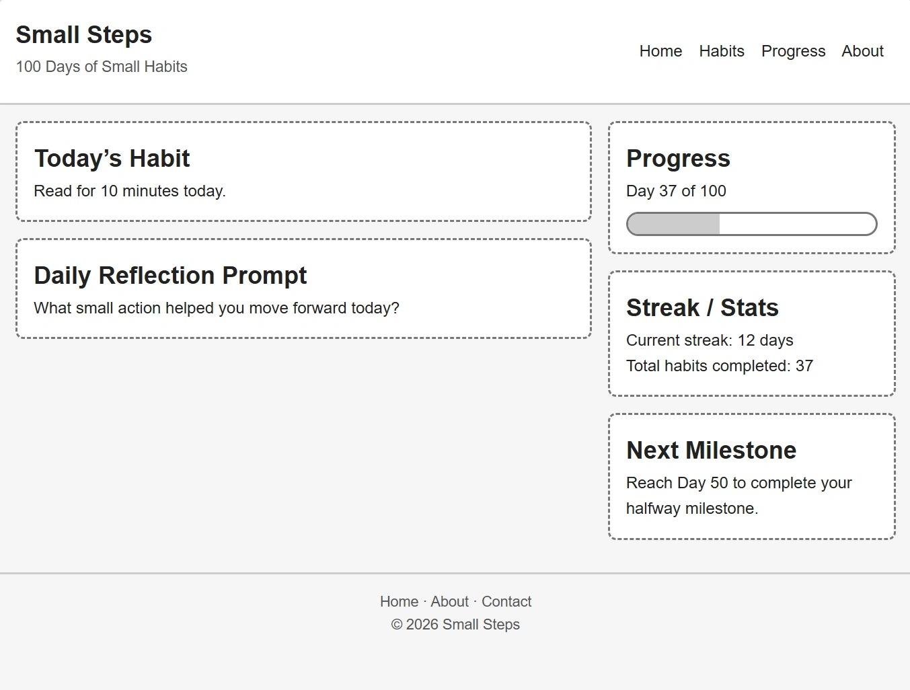

Name: Small Steps | 100 Days
Why this name: Small daily habits can lead to meaningful personal growth over time. The “100 Days” part connects to my own experience of building sustainable habits and the journey of self-improvement.
The purpose of this site is to help visitors understand how small daily habits can create long-term personal improvement. The site will explain how habits are formed, provide simple habit-building advice, recommend helpful books and videos, and include a basic habit tracker visitors can use to monitor their own progress.
Primary Color: #2F6F5E
Secondary Color: #F4EDE4
Heading Font: Montserrat
Body Font: Open Sans
Mobile Layout:

Desktop Layout:
